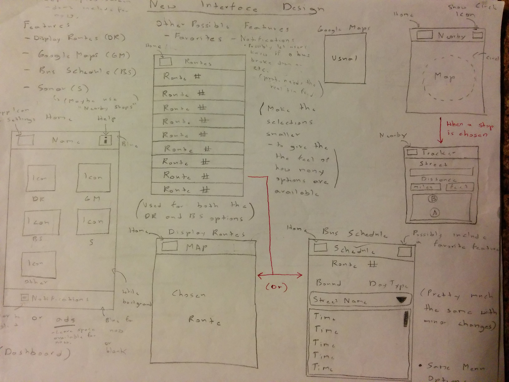
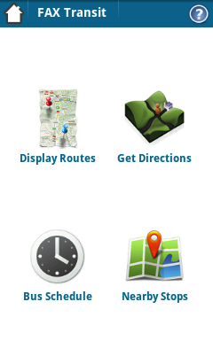
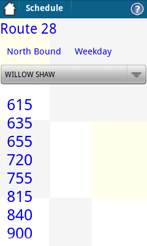
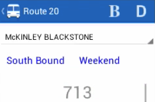
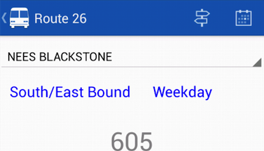
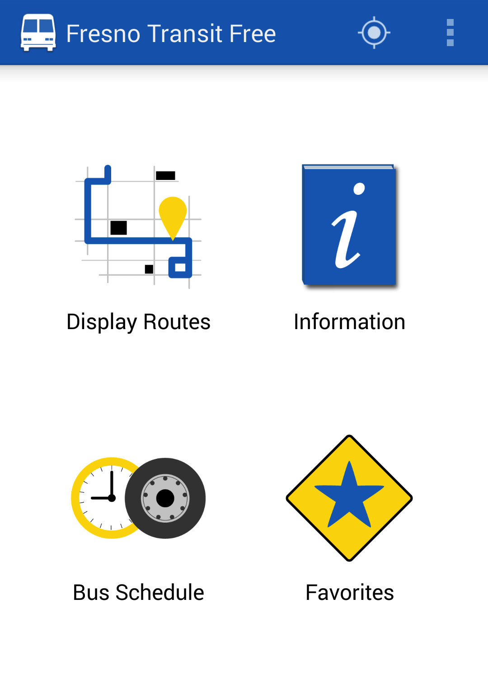
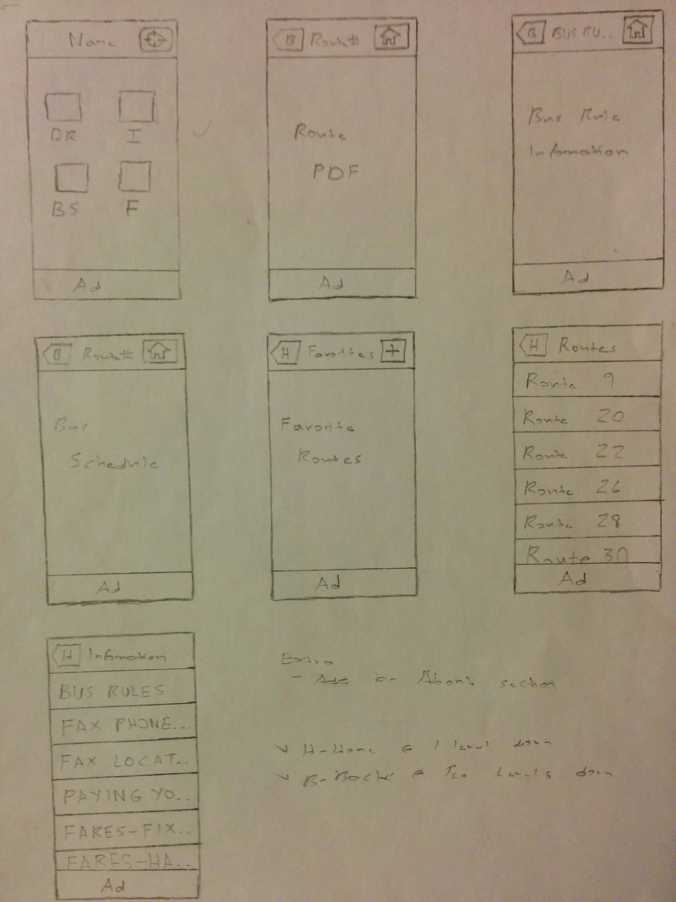
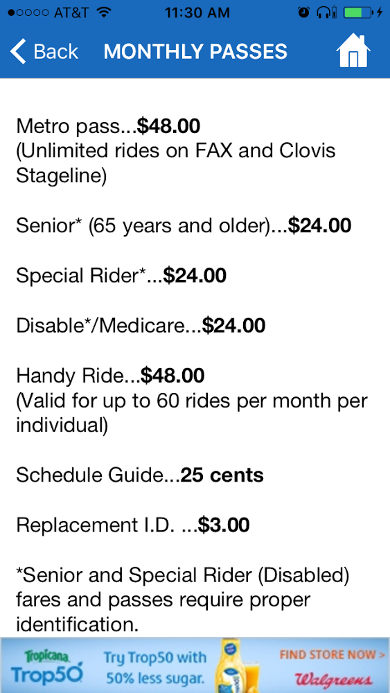

Type
For-Profit Endeavor
(class project initially)
Time frame
Aug 2011 - April 2014
(launched in April)
Role
Lead Designer (post concept)
Android & iOS Developer
General Project Manager
Graphic Artist Liaison
Responsibilities
Wireframes & Mockups
User Interface Design
Prototyping
Frontend and Backend Work
Task & Document Management
Coordinated & Facilatated Meetings
Copywriting & Presentations
Team
Peggy Bounyarith
Vanida Bounyarith
Homer Greene Jr
Joshwin Greene
Design Tools Used
Adobe Photoshop & Illustrator
Precursor
Cacoo
POP
Pencil & Paper
Background
This project began as a class project of my Advanced Programming Applications class during the summer of 2011 at my community college. The premise of our project was to create a prototype Android application that would serve the students of Fresno City College (FCC) that utilize the Fresno Area Express (FAX) bus system.
The underlying idea behind the application was that in a world where we have smartphones, why do bus riders need to use a paper bus schedule or access the schedule from the local transit agency’s website when that experience is cumbersome or needlessly uses data that bus riders could use for something else? At the end of the day, we wanted to create an app that served as a digital bus schedule, but which also served as a less convulted alternative when compared to the schedule on FAX’s website and their printed bus schedule. In the future, we eventually wanted to add a real-time feed.
One of the great things about this project was that we were able to get the assistance of the IT Director at FAX, who was very supportive of our project and has helped us set up multiple meeting with FAX.
We were given six weeks to develop the application and the final result ended up having the following features:
-
Display Routes: Shows a map that displays the bus routes around FCC and their respective bus stops
-
Destination: Opens Google Maps with either the browser or Google Maps if the user has that application installed
-
Bus Schedule: Displays the arrival times of all of the major bus stops that are served by FAX
When it came to my role for this project, I served as the team leader after being selected for that position at our first weekly meeting. Besides serving as one of the developers, I was tasked with preparing agendas, facilating meetings, delegating tasks when necessary, and guiding and coordinating team activities.
Note: Ignore the mouse icon
The Challenge - Post Class Project
After the class ended, a student development team was formed from those in the team that wanted to continue to work on the application and solve a problem in our local community. Instead of only focusing on students, we challenged ourselves to build a transit application for all of the bus riders in Fresno. When it came to my role, I continued to serve in a leading capacity by preparing agendas and coordinating / facilatating meetings while serving as a developer with Peggy and Vanida.
The team was called ScholarDev and here was our mission statement:
“Our mission is to express our active citizenship of making a difference in our communities by providing technology that makes lives and transportation easier for everyone.” - ScholarDev
We would eventually incorporate in August of 2012. Under the name of ScholarDev LLC we would specialize in the development of mobile applications. Based on my leadership contributions up to this point, I was recognized as being the General Project Manager for the company and for our first project, which became known as Fresno Transit Free.
Sonar Feature
One of the first features that was added after the class ended was a sonar feature. As the name implies, this feature would allow users to be able to find bus stops within a certain radius from their current location.The user would be able to pick a stop and then hone in on the stop as they walked towards it. The sonar feature would then tell in intervals how many feet/miles they were away from a particular stop. This feature was also known as the Nearby Stops feature.
Research Effort
One of the great things about our team was that two of our developers had a lot of experience using FAX. However, this didn’t mean that we didn’t want more feedback.
So, in order to get some user feedback on some features that we were thinking of adding and some other details, we decided to put a survey together. After doing so, we decided to present to the Associated Student Government (ASG) at FCC. They agreed to include our survey into their Town Hall survey that would be emailed to all of the students at FCC.
Out of the 21,000 students at FCC in 2011, 910 took the survey. Here were the results (questions were optional):
-
Out of 910 students, 55.6% stated that they were interested in a mobile bus app.
-
Out of 500 students, 81% stated that they would like to see safety and other information from FAX within the app.
-
Out of 499 students, 92.6% stated that they would be interested in a real-time feed.
-
Out of 491 students, 66.2% wanted the app for Android whereas 66.4% wanted the app for iPhone (question supported multiple answers)
With these results in hand, it reaffirmed the demand for the real-time feed. It also validated the need for an information feature and that the app needed to support both Android and iOS.
Redesign
By the end of 2011, we were looking to improve the app’s interface. Peggy and I volunteered to work on this task. After researching the Android design patterns at the time, I learned about the action bar and the dashboard navigation pattern, which is now called the six-pack by Google. I saw the combination of these two concepts as being a great way to make the app more streamlined and comfortable for the user. One of the apps that I was inspired by was the first iteration of Google’s Google+ app for Android.
After translating my ideas into wireframes, I proposed the use of the action bar and dashboard navigation pattern to the rest of ScholarDev. Here were my wireframes:

After giving everyone some time to get a feel for the proposed navigation pattern, my proposal was approved. From that point on, I started to lead the improvements that were made to the app’s user experience and user interface.
I implemented the action bar and new navigation pattern using some java files that I found online. One that would allow me to show the feature icons in a grid and another that would show an action bar (now called a toolbar) at the top of the application.


Favorites Feature
After the new navigation pattern was implemented, I proposed the creation of the favorites feature. Since the main use of the app would be to view the bus schedule or a specific bus route, I thought it would be a good idea if users were able to favorite their most used routes in order to quickly access scheduling and route information. This proposal was approved and I was assigned the task of designing and implementing the feature, which was completed in July of 2012.
Note: Ignore the line that is under the action bar on the dashboard. Additionally, these screenshots were taken after the changes to the frontend, which is discussed in the next subsection.
Feature and Frontend Revisions
Since the core audience had been changed to all bus riders in Fresno, the Display Routes feature was changed so that it would display visual depictions of each route that FAX serves. In each image, the user would be able to see a route’s stops and corresponding streets. We used the same images that were available on FAX’s website. (this would eventually be approved by FAX)
In the middle of 2012, I had heard about the ActionBarSherlock library and thought that besides improving the overall look of the app, it would also give us a more standard foundation when it came to supporting Android’s action bar functionality. So, after bringing this up to the group, I volunteered to recreate the application’s frontend using this library.
Around this time, I also suggested that we move the Destination feature to the dashboard’s action bar so that it would function as an action item since this feature was more of a secondary action. After this suggestion was approved, I went ahead and implemented the change.
In September, we decided to put the Sonar / Nearby Stops feature on hold once we realized that supporting this feature would not be cost-effective if we were going to make this application a free app with advertising. So, in its place, we decided to replace it with the Information feature that we were planning on adding to the app based on the results of the aforementioned ASG survey.
Feature and Frontend Revisions (cont.)
In the beginning of 2013, we started to have people try out the app and see what they thought of it. One criticism that was brought to our attention was how the action items for the bus schedule feature were unclear.
Here’s a screenshot for reference:

In the image above, you will see a B and D on the top right side of the bus schedule feature. When browsing arrival times, a user would press the “B" in order to change bounds whereas they would press the “D" in order to change the day type, i.e. weekday or weekends.
I volunteered to fix this issue since I was the one that designed the action items for this feature. Based on the design guidelines at the time, it made sense to make use of icons instead of letters. So, I first looked for action-item-ready icons that were the most relevant for their individual use cases. It was easy to find an icon for changing the day type. However, I couldn’t find an icon that matched the change bound function. Since I was currently taking an Adobe Illustrator class at the time, I decided to create the icon myself. After deliberating on how to make the icon more pronounced, the final version was selected after I created two revised versions of the icon.
Here are the two revised action items (same order):

Around this time, based on some design articles that I had been reading, I suggested that we fine-tune the dashboard by making its central buttons give feedback to the user when they navigated to a major part of the app. This meant that each dashboard button would have the following states: normal, focused, and pressed. By making this change, it gave the user the sense that the app was quick in responding to their inputs.
Besides making this improvement, I also fine-tuned the user interface of the bus schedule feature and led our discussions related to choosing the app’s color scheme.
Graphic Artist Competition
Since we were nearing release, we knew that we needed to do something about the temporary icons that were being used for the dashboard buttons. We decided to find a graphic artist who could design the dashboard buttons for us. I had also read that Google was encouraging Android developers to design feature graphics that would be used for advertising purposes on their app’s store page. After bringing this idea back to the group, we decided to have the graphic artist create one of these as well.
In order to find a graphic artist who we could routinely work with, we decided to put a competition together. I led the management of it, wrote the design briefs, and provided relevant materials for the graphic artists to draw inspiration from. After conducting the competition, I would serve as the liaison to the graphic artist who won the competition.
After all of the dashboard icons had been created and
finalized (and after some additional fine-tuning):

Developing the iOS Version
In February of 2013, we learned that there would be a 59 day long coding/business competition called 59DaysofCode in our hometown. We decided to enter the competition in order to develop the iOS version. If we had the time, we also planned on including a prototype of the real-time feed. The competition began on April 20th.
When it came to the design of the iOS version, my plan was to use the dashboard navigation pattern like the Android version. However, I was unsure if that was possible since the iPhone didn’t have an on screen back button like Android phones. Based on iOS apps that I had used in the past, I thought that the use of a bottom tab bar would be necessary. However, once I learned that a back button would be shown by the app itself and that custom icons could be placed on the right hand side of the navigation bar, I realized that I had all of the tools to replicate the dashboard navigation pattern.
The key element is that a custom home button would be placed on the right hand side of the navigation bar if the user was two screens down whilst using the application. This applied to the following features: Display Routes, Information, and the Bus Schedule. Here are my wireframes, which I used to create a POP prototype:

During the competition, I designed and implemented the Favorites feature, led additions that were related to fine-tuning the user interface and making it consistent with the Android version, debugged every feature, and designed and created various marketing materials.
By the end of the competition, we had completed the application and were able to include the live feed prototype. We showed off our app at the showcase in June. As a personal note, this event is where it really hit me that software could positively impact people’s lives. It was great to continually get positive feedback from bus riders that said that our project would be a great asset for their daily commutes.
We ended up tieing with another competitor for People’s Choice!

The Home Stretch
In August of 2013, I learned that iOS 7 would be released in September. After reading some articles pertaining to how developers should taken advantage of it and not get left behind, I consulted with one of my business partners about postponing our app’s launch as it made sense from a development and marketing perspective. It didn’t make sense to launch the app and then have to update the frontend of the iOS version immediately afterwards to look up-to-date with Apple’s transition to flat or non-skeumorphic design.
So, after getting my business partner’s approval, I brought this idea back to the rest of my business partners. After much deliberation, we decided to push back the release date of our app so that we could update the iOS version to iOS 7 and release both versions at the same time.
While nearing release, I proposed that we improve the reading experience of the Information feature. What this meant is that instead of just showing unstylized text, we would bold text where it made sense. By doing this, I believed that it would tell people that we truly cared about the user's experience. I implemented these changes on both platforms.

Release
While coordinating with FAX, we released the app in April of 2014 for both Android and iOS.
As of 2016, the Android version has been downloaded more than 15,000 times on Google Play, with a 4/5 star rating.
Features:
-
Bus Schedule: Arrival times for every stop that is served by FAX
-
Display Routes: Depictions of each route that FAX serves
-
Information: Information related to riding FAX, such as fare and transfer information
-
Favorites: Allows riders to save their most used routes for quick access
-
Quick Access to Google Maps

Bonus - Accessibility Experience
In January of 2015, we received an email from an access technology instructor from the Valley Center for the Blind in Fresno. He made us aware of some accessibility issues that were present in both versions of the application. After describing the issues, he offered his assistance.
We proposed that we would like his organization to test and give us feedback on the changes that we would make to the application. The instructor stated that he would be more than happy to assist us.
First Plan of Attack
So, our first plan of attack was to do research into how we would make both versions more accessible. Since I was on a break at the time, Vanida was tasked with looking into the Android version whereas Peggy would look into the iOS version. After learning how the Android version’s main accessibility mode, named TalkBack, worked, we decided to create a new layout specifically designed for it, which would be used when TalkBack was enabled. For reference, when TalkBack is enabled on an Android device, that device provides spoken feedback to the user, which is intended to help blind and low-vision users navigate apps and the phone’s interface in general.
In order conserve our development efforts, we decided to create an interactive prototype for the Android version. Our overall plan was to first get the changes validated by the instructor and his coworkers and then move on to to actually implementing the changes. Since Vanida was also working on revamping our website, based on my design, at the time and I had returned from my break, I volunteered to spearhead the creation of the interactive prototype for the Android version. It also made sense to do this for the iOS version, with its version of TalkBack called VoiceOver. So, Peggy took on the task of creating the prototype for that platform.
Creating the Interactive Prototype
Before creating the Android version’s prototype, I first wanted to understand who I was targeting when it came to making these types of improvements and what they would need or require. I also wanted to understand what were Google’s guidelines when it came to making Android app’s more accessible.
Here’s the information that I put together:
Audience
-
Blind and sight-impaired users
-
Deaf users
Users Needs / Requirements
-
Blind Users: (1) will need to be able to hear information that is displayed in the app. (2) will need to be able to use hardware-based or software directional controls (focused-based navigation)
-
Sight-Impaired Users: (1) will need to be able to increase the text size of different text elements in the app (2) need to have the ability to learn what specific controls do
-
Deaf Users: (1) need to have the ability to learn what specific controls do (related to accessibility requirements)
Accessibility Requirements (according to Google’s guidelines)
-
Describe user interface controls via content descriptions
-
Enable focus-based navigation to support hardware-based or software directional controls
-
Add accessibility interfaces to custom view controls
-
No audio-only feedback (for deaf and hard of hearing users)
Based on this information, I started to put some ideas together on how the app could be made more accessible to the users that were being targeted. Here were my ideas for the new layout based on the above guidelines and requirements:
Display Routes
For blind users, add a way to describe specific routes through audio feedback.
Information
For blind users, add secondary options to allow for users to find information more quickly. In addition, we can look into making the directory more specific.
Bus Schedule
For blind users, add a step before users are shown the schedule for a specific route in order to speed up the schedule browsing process. For this feature, it would make sense to have the user choose whether they are looking for AM or PM times.
Favorites Feature
Since this feature uses a custom control, we need to apply an accessibility interface to it.
Once this was complete, I brought the associated document back to the rest of ScholarDev in order to get some feedback and obtain any other ideas. At our meeting, we made the following decisions:
Audience
-
Decided to remove deaf users from the audience of the TalkBack-specific layout since there wasn’t anything in the app’s normal layout that would make the app difficult to use for people that were deaf
-
Decided that color-blind / partially color-blind users needed to be supported
Feature-specific
-
Display Routes: When a sight-impaired user selects a route, a sound clip that announces the route’s major stops would be played, like an announcement you would hear while riding a train.
-
Information: We would break down elements in the information directory so that they would be more specific and so that sight-impaired users would only hear the information that they wanted to hear. Since this would help normal users, we decided to make this change to the normal layout as well.
-
Bus Schedule: We would change how bus arrival times were being read by TalkBack. In its current form, the times don’t have any identifiers, like a “:”, that differentiate the arrival times from regular numbers. So, for 6:10, TalkBack would say “6 hundred and ten” instead of “6 10.”
Outcomes
After completing the prototype and including a brief on how the interactive prototype should be used, I sent it to the instructor after getting it approved by ScholarDev. Much to our surprise, the instructor turned out to be blind. So, besides being a strong reminder that you shouldn’t make assumptions, we asked him to send the prototype to his sighted co-workers. We would eventually send him a diagram of what would be changed for the iOS version.
Even though we never actually got any feedback from his co-workers, this experience made us realize that we should think about accessibility earlier rather than later. So, when making plans to find a grant to develop the real-time version of the application, it was imperative that our proposal included details related to developing an accessible transit application, especially when it came to supporting bus riders that were blind.
This would be after I left the company, but eventually, ScholarDev LLC was able to get a recommendation letter from the Resources for Independence Central Valley (RICV) to be used for their submission for the Just Transit Challenge, which proposed the creation of a real-time version of their application. In association with ValleyPBS and FAX, they were announced as one of the winners of that competition.
© Joshwin Greene 2017